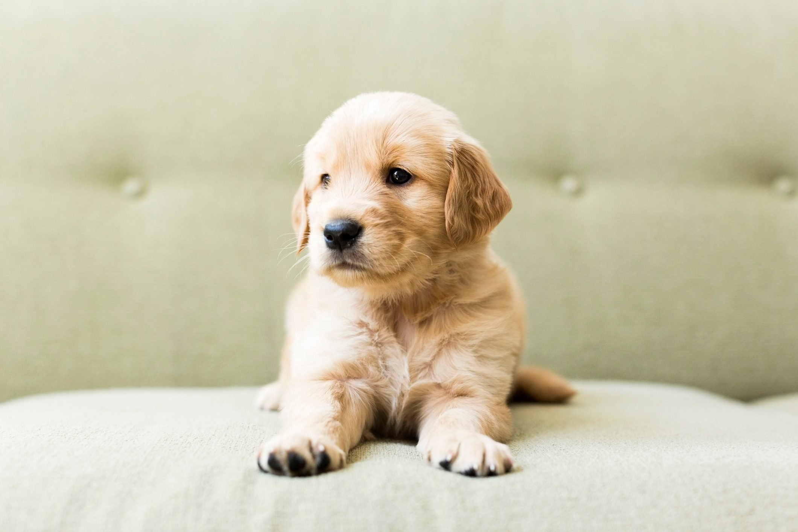

Surprising facts about puppies
A puppy is a juvenile dog. Some puppies can weigh 1–1.5 kg (1-3 lb), while larger ones can weigh up to 7–11 kg (15-23 lb). All healthy puppies grow quickly after birth. A puppy's coat color may change as the puppy grows older, as is commonly seen in breeds such as the Yorkshire Terrier. Puppy refers specifically to young dogs.Puppies are born blind and deaf,they spend 15–20 hours a day sleeping, Puppies become ‘adults’ when they turn one,they like when you sing-talk to them, Puppies are born without teeth.